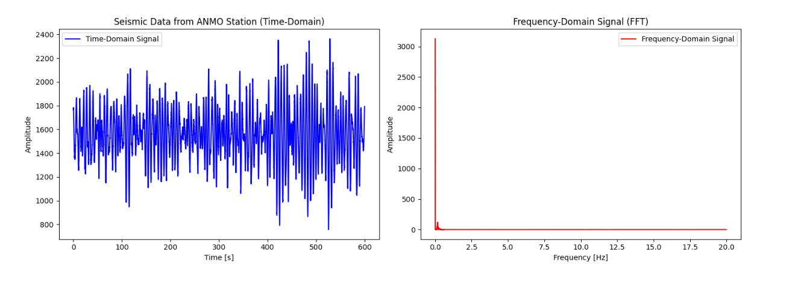
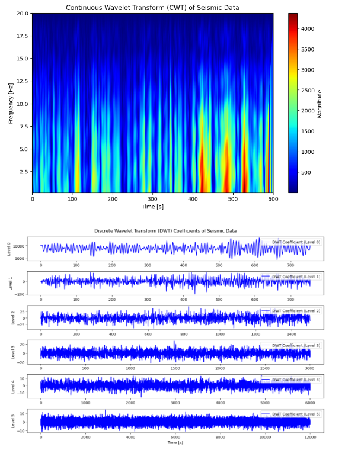
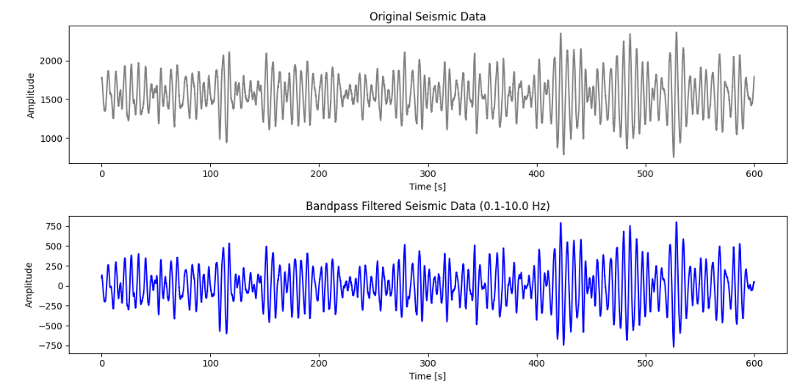
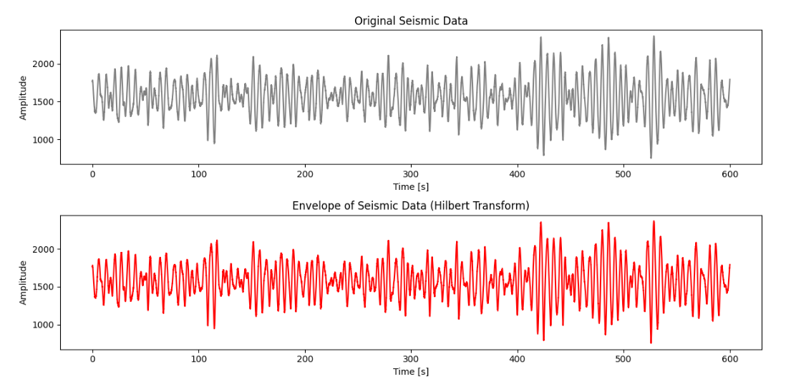

Seismic Detection Across the Solar System
Earth Seismic Data
Past 5 Hours (5-Minute Intervals)
Past 24 Hours (10-Minute Intervals)
Past 48 Hours (1-Hour Intervals)
How the Data is Interpreted
1. Fourier Transform (FFT)
Purpose: Converts time signals into frequency data to find seismic signals amid noise.
Results Interpretation:

- Frequency Spectrum: Displays amplitude of frequencies; peaks indicate dominant frequencies.
- Noise Identification: Helps isolate seismic events from background noise.
- Event Characterization: Identifies seismic events by their unique frequency signatures.
2. Wavelet Transform (CWT and DWT)
Purpose: Analyzes seismic events across frequency bands to extract seismic signals.
Results Interpretation:

- Time-Frequency Representation: Shows how frequency components change over time.
- Multi-Resolution Analysis: Detects transient features in the signal.
- Event Detection: Locates seismic activity at specific times and frequencies.
3. Bandpass Filtering
Purpose: Removes high-frequency noise and low-frequency drift from signals.
Results Interpretation:

- Cleaned Signal: Enhances clarity by filtering out unwanted frequencies.
- Event Visibility: Makes significant seismic events easier to identify.
- Parameter Optimization: Allows adjustments to cutoff frequencies for specific analyses.
4. Envelope Detection
Purpose: Highlights potential seismic events by analyzing signal amplitudes.
Results Interpretation:

- Amplitude Envelope: Represents the signal's instantaneous amplitude.
- Event Detection: Helps detect the timing and duration of seismic events.
- Noise Suppression: Reduces background noise, making key features clearer.
Mars Seismic Data
Past 5 Hours (5-Minute Intervals)
Past 24 Hours (10-Minute Intervals)
Past 48 Hours (1-Hour Intervals)
Moon Seismic Data
Past 5 Hours (5-Minute Intervals)
Past 24 Hours (10-Minute Intervals)
Past 48 Hours (1-Hour Intervals)